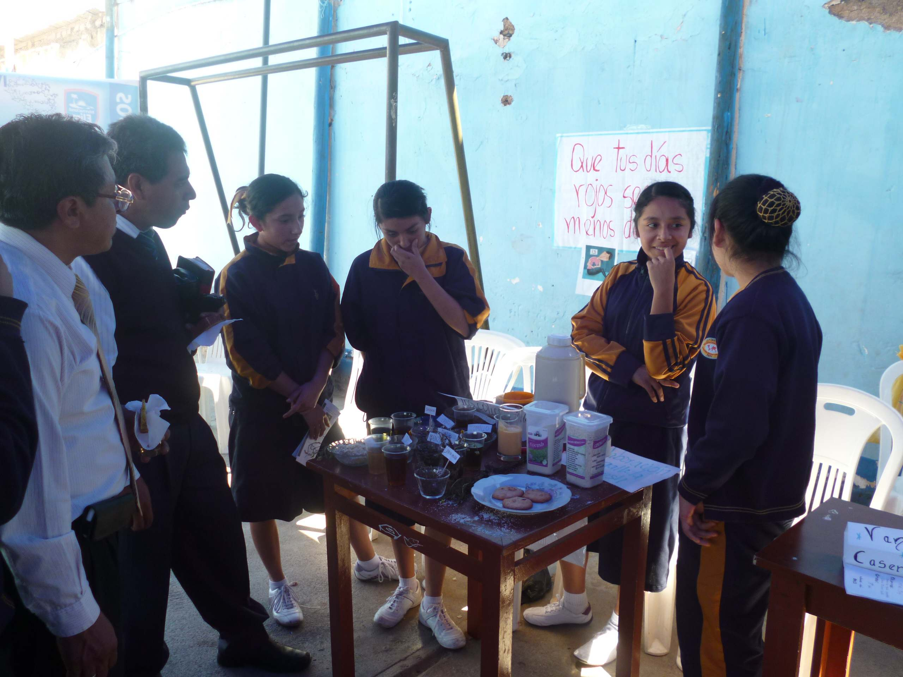

Internacional Elim Huánuco
Lograr una formación integral que asegure la calidad educativa, fundamentada en una educación CRISTOCÉNTRICA y funcionalmente útil a la sociedad.
Nuestro trabajo está orientado a formar en el estudiante competencias que le permiten asumir y a afrontar con éxito los retos y desafíos que exige la sociedad, fortaleciendo sus vínculos y actitudes con una educación en valores cristianos, brindando un servicio de calidad en un ambiente armoniosos y con profesionales altamente calificados e identificados con la institución.
Esta es una pagina creada por la I.E. Internacional Elim Huanuco - 2014